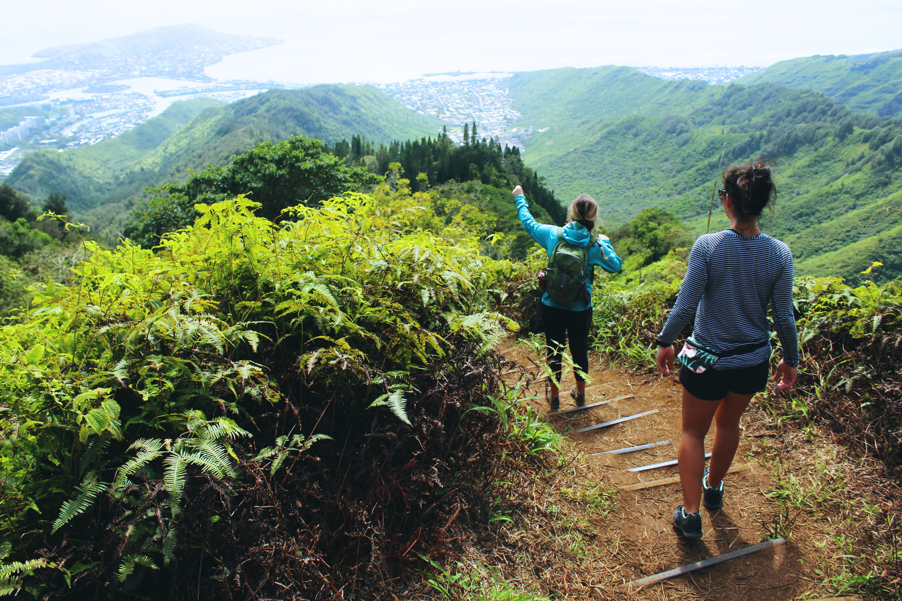
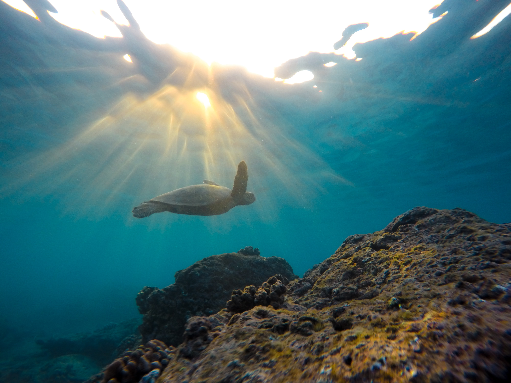

4 Major Hawaiian Islands
Maui
Maui is an island of rich green valleys and amazing views. It's no wonder this island is dubbed the "Valley Isle". Maui is the second largest Hawaiian island and is filled with lush green terrain. This island's east and west sides are completely different. The west side of the island consists of small cities, attractions and shops. On the other hand, the east side of the island may be difficult to navigate and is definitely meant for the adventerous spirit. One of the most popular attractions in Maui is the "Road to Hana" which is a 45-mile stretch of very narrow road. The drive consists of waterfalls and unbelievable sights. Maui is also known for its popular scuba diving locations. Divers are very likely to see incredible wild life and caves while diving. Who is Maui Best Suited for?
The two sides of the islands are completely different. For this reason I will include two separate lists for each side. For the east side of the island, I would recommend:
- Adults, honeymooners, hikers, adveturists.
- families with older adults or teens.
- Experience with winding roads.
- Families with young children.
- Scuba divers and snorkelers.
- Those adventerous in trying seafood.


